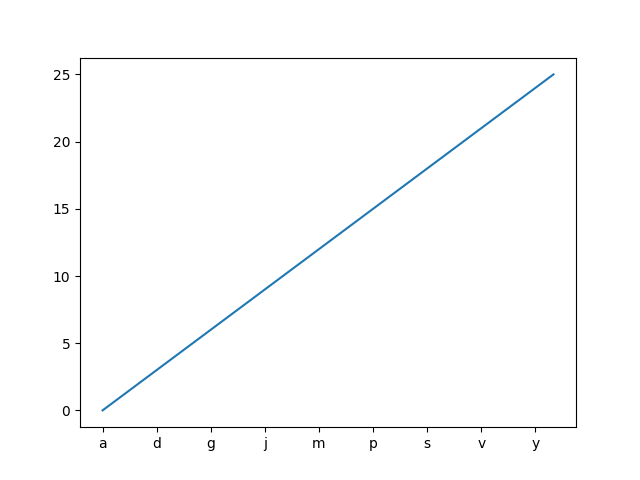

Version 2.2.0
Using ax.set_xticks causes the tick labels to be set on the currently chosen ticks. However, you may want to allow matplotlib to dynamically choose the number of ticks and their spacing.
In this case it may be better to determine the tick label from the value at the tick. The following example shows how to do this.
NB: The MaxNLocator is used here to ensure that the tick values take integer values.
import matplotlib.pyplot as plt
from matplotlib.ticker import FuncFormatter, MaxNLocator
fig = plt.figure()
ax = fig.add_subplot(111)
xs = range(26)
ys = range(26)
labels = list('abcdefghijklmnopqrstuvwxyz')
def format_fn(tick_val, tick_pos):
if int(tick_val) in xs:
return labels[int(tick_val)]
else:
return ''
ax.xaxis.set_major_formatter(FuncFormatter(format_fn))
ax.xaxis.set_major_locator(MaxNLocator(integer=True))
ax.plot(xs, ys)
plt.show()